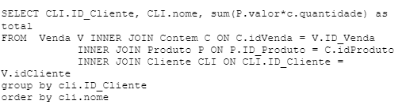
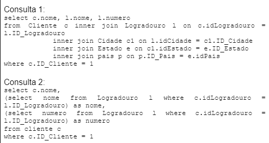

Questões SQL Resolvidas
Pergunta 1
Observe a consulta abaixo:

Sobre a consulta, avalie as asserções:
- I. A consulta não realiza a soma dos valores gastos por cada cliente.
- II. O nome do cliente deveria fazer parte do GROUP BY ou da função de agregação.
Alternativas:
- As asserções I e II são verdadeiras, e II justifica I.
- I é falsa e II é verdadeira.
- I e II são falsas.
- I e II são verdadeiras, mas II não justifica I.
- I é verdadeira e II é falsa.
Resposta correta:
As asserções I e II são proposições verdadeiras, e a II é uma justificativa correta da I.
Explicação:
- O campo nome aparece no SELECT.
- Mas ele não está no GROUP BY.
- Isso gera inconsistência na agregação.
- Campos não agregados precisam estar no GROUP BY.
GROUP BY cli.ID_Cliente, cli.nome
Pergunta 2
Observe as consultas abaixo:
.png)
Indique se as afirmações são verdadeiras ou falsas:
- ( ) As duas consultas realizam a mesma operação.
- ( ) As duas consultas realizam operações diferentes.
- ( ) Para terem o mesmo resultado o AND deveria ser OR.
- ( ) BETWEEN deveria ser trocado por IN.
- ( ) Ambas apresentam erro por falta de junção.
Alternativas:
- F, V, V, F e V.
- V, F, F, F e F.
- F, V, V, V e V.
- F, V, V, F e F.
- V, F, F, V e V.
Resposta correta:
V, F, F, F e F.
Explicação:
- As duas consultas filtram IDs entre 5 e 10.
- BETWEEN já faz exatamente isso.
- Não existe necessidade de OR ou IN.
- Também não há erro de junção.
WHERE ID_Cliente BETWEEN 5 AND 10
Pergunta 3
Um analista precisa criar consultas SQL Server para:
- Obter o valor total de pedidos.
- Encontrar pedidos acima da média.
Alternativas:
- Funções de agregação como SUM() e AVG().
- WHERE exclusiva.
- Procedimentos armazenados obrigatórios.
- Chaves estrangeiras.
- Comandos DDL.
Resposta correta:
SUM()
AVG()
Explicação:
- SUM calcula totais.
- AVG calcula médias.
- Essas funções pertencem às funções de agregação.
Pergunta 4
Sobre tipos de dados inteiros:
- I. Para armazenar idade, o melhor tipo é int.
- II. O campo idade sempre armazenará inteiro.
Alternativas:
- I é falsa e II é verdadeira.
- I e II são verdadeiras e II justifica I.
- I e II são falsas.
- I e II são verdadeiras, mas II não justifica I.
- I é verdadeira e II é falsa.
Resposta correta:
A asserção I é falsa e II é verdadeira.
Explicação:
- Idade realmente usa números inteiros.
- Mas INT pode ser exagerado para idade.
- Tipos menores como TINYINT podem ser melhores.
Pergunta 5
Observe as consultas abaixo:

Analise as afirmações:
- I. As duas consultas exibem os mesmos resultados.
- II. A Consulta 2 utiliza subconsultas.
- III. A Consulta 1 associa mais tabelas do que seria necessário.
- IV. As duas consultas exibem resultados diferentes.
Alternativas:
- I, apenas.
- II, III e IV, apenas.
- I, II e III, apenas.
- I, II, III e IV.
- II, apenas.
Resposta correta:
I, II e III, apenas.
Explicação:
- As duas consultas retornam os mesmos dados.
- A Consulta 2 usa subconsultas.
- A Consulta 1 usa mais JOINs do que o necessário.
- A IV é falsa porque os resultados são equivalentes.
SELECT nome FROM Logradouro